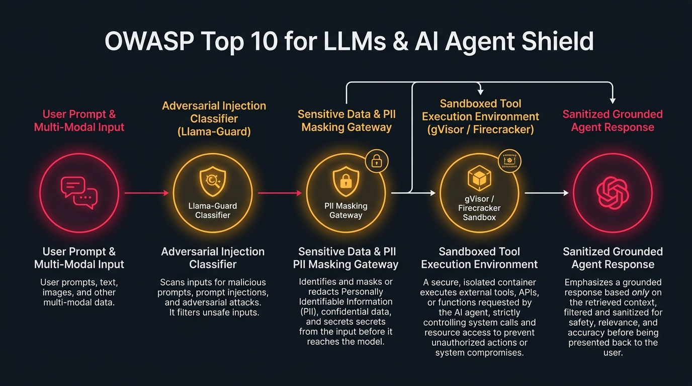

Prompt injection classification, sandboxed agent tools & sensitive PII guardrails
Protect agent swarms and RAG workflows against OWASP Top 10 for LLMs: prompt injections, insecure tool hijacking, sensitive data leakage, and denial of service.
Security Telemetry & Compiled Blueprint
Prompt Shield Latency
< 18ms Sub-Reflex
Tool Sandbox Engine
gVisor Micro-Containers
OWASP Compliance
LLM01 through LLM10
guardrails:
version: "2.0"
owaspCompliance:
llm01_prompt_injection:
classifier: "meta-llama/Llama-Guard-3-8B"
action: "BLOCK_AND_LOG"
llm02_insecure_output:
sanitizer: "html-escape-strict"
llm06_sensitive_info:
masking: "PII_REGEX_ENTITIES"
llm08_tool_hijacking:
humanInTheLoop: true
sandbox: "gVisor"
OWASP Top 10 for LLMs & AI Agent Shield Studio Enterprise Topology

Overview & Architectural Superiority
Protect agent swarms and RAG workflows against OWASP Top 10 for LLMs: prompt injections, insecure tool hijacking, sensitive data leakage, and denial of service.
Enterprise Production Scenarios
- Cryptographic Verification: Prevent tampering in CI/CD pipeline artifact creation and deployment.
- Automated Gating: Enforce zero-tolerance security rules before artifacts schedule onto Kubernetes clusters.
- Zero Bastions / Zero Static Keys: Ephemeral, identity-based sessions verified against immutable transparency ledgers.
Infrastructure & Software Technology Stack
Input & Output Shields
- • Meta Llama-Guard-3-8B
- • NeMo Guardrails 0.9+
- • Presidio PII Anonymizer
Tool Execution Sandbox
- • Google gVisor (runsc)
- • AWS Firecracker MicroVMs
- • Seccomp Syscall Filtering
Adversarial Telemetry
- • OpenTelemetry LLM Spans
- • Langfuse Attack Tracing
- • Automated Agent Circuit Breaker